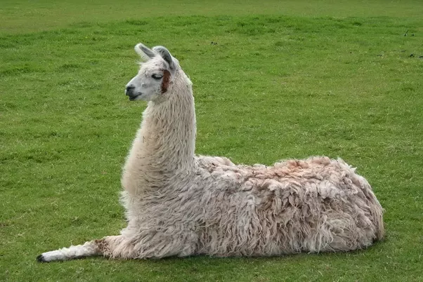
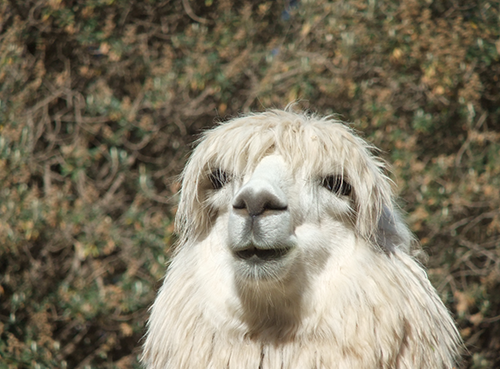
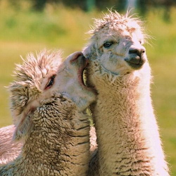

All About Llamas
The llama is a domesticated South American camelid, widely used as a meat and pack animal by Andean cultures since the Pre-Columbian era.
Traits
In essential structural characteristics, as well as in general appearance and habits, all the animals of this genus very closely resemble each other, so whether they should be considered as belonging to one, two, or more species is a matter of controversy among naturalists.
Nutrition
Options for feeding llamas are quite wide; a wide variety of commercial and farm-based feeds are available. The major determining factors include feed cost, availability, nutrient balance and energy density required. Young, actively growing llamas require a greater concentration of nutrients than mature animals because of their smaller digestive tract capacities.
Behavior
Research suggests the use of multiple guard llamas is not as effective as one. Multiple males tend to bond with one another, rather than with the livestock, and may ignore the flock. A gelded male of two years of age bonds closely with its new charges and is instinctively very effective in preventing predation. Some llamas appear to bond more quickly to sheep or goats if they are introduced just prior to lambing. Many sheep and goat producers indicate a special bond quickly develops between lambs and their guard llama and the llama is particularly protective of the lambs.
